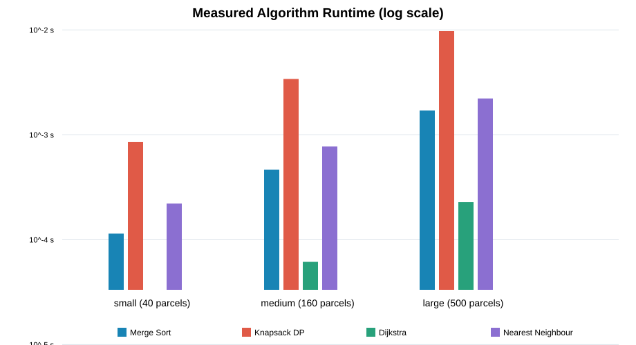

Executive summary
This project integrates four algorithmic components into one courier-planning workflow. Merge Sort creates a deterministic priority list. Exact 0/1 Knapsack dynamic programming selects the maximum-value subset within the vehicle weight capacity. Dijkstra computes shortest road distances. Nearest Neighbour uses those distances to approximate a closed route through the selected destinations.
Key modeling distinction: Knapsack chooses which parcels ride on the trip; routing chooses the order for visiting the distinct destinations of those selected parcels.
Phase 1 — Courier Problem Design and Planning (20 marks)
Input is a parcel list, integer vehicle capacity, depot, and weighted road network. Output is the sorted candidates, feasible parcel subset, shortest-path distances, and a depot-to-depot delivery order.
| Data | Fields / assumptions |
|---|---|
| Parcel | ID, destination, positive integer weight and value, priority, deadline |
| Road graph | Undirected adjacency list; edges have positive km distances |
| Vehicle | One trip with a fixed capacity in kg |
JSON graph → Dijkstra shortest paths → Nearest Neighbour → closed tour
The shortest-path distances create a metric closure over destinations; reported distance follows road paths. The sample graph is connected.
Phase 2 — Package Prioritization and Box Filling (20 marks)
Merge Sort orders descending priority, ascending deadline, then parcel ID. Its complexity is O(n log n) time and O(n) auxiliary memory. Knapsack uses DP[i,c] = max(DP[i−1,c], DP[i−1,c−wᵢ] + vᵢ) when the item fits. It takes O(nW) time and memory, where W is capacity in integer kilograms, and backtracks to recover the selected set.
The objective is total parcel value. Priority and deadline organize candidates and provide readable dispatch ordering; they do not force a parcel into the optimal packing selection or impose a delivery time window.
Phase 3 — Route Maker and Graph Processing (20 marks)
Dijkstra with an adjacency list and binary heap runs in O((V+E) log V) time and O(V+E) space. Predecessors permit road-path reconstruction. Nearest Neighbour repeatedly chooses the nearest remaining customer and returns to the depot. It is a TSP approximation, not a proof of globally shortest tour; this simple implementation recomputes shortest paths while selecting stops.
Phase 4 — Integration and Correctness (20 marks)
The CLI reads CSV and JSON, validates positive road distances, executes the full plan, and prints calculated results. Five unit checks cover sorting, a known optimal packing, a known shortest path, route closure, and sample input loading. Run python -m unittest discover -s tests -v from the project directory.
Included sample: 12 parcels, 7 road nodes, default vehicle capacity 30 kg. Saved output trace: evidence/sample_run.txt.
Phase 5 — Performance Analysis and Submission (20 marks)
Each component is timed with time.perf_counter() over deterministic generated inputs. The one-run measurements below are illustrative and machine dependent. Knapsack capacity is held at 100 kg; Nearest Neighbour uses up to 15 stops. See the raw CSV and chart under evidence/.

Because times are small, the logarithmic chart makes the faster graph operations visible beside Knapsack DP. A rigorous comparison should repeat trials and report medians or distributions.
Results, limitations and next steps
The application demonstrates the expected growth patterns: Merge Sort scales near O(n log n), Dijkstra depends on graph size, and DP scales with both parcel count and capacity. Nearest Neighbour’s results depend on stop count and network structure. Runtime depends on the computer and Python build.
- One vehicle and one trip; no parcel volume, service duration, or traffic model.
- Roads are static, undirected, positive distance; disconnected requested destinations are unsupported.
- Priority and deadlines are not hard constraints; selection maximizes value only.
- Nearest Neighbour may return a suboptimal tour.
Future work: multi-vehicle planning, time windows, volume constraints, directed/time-dependent roads, exact TSP comparisons on small graphs, and repeated benchmark trials.
Reproduction
Run python src/courier.py for the plan; python src/courier.py --capacity 35 to change capacity; python src/courier.py --benchmark to regenerate timing data. No third-party dependency is needed. README.md contains the full file map and command guide.